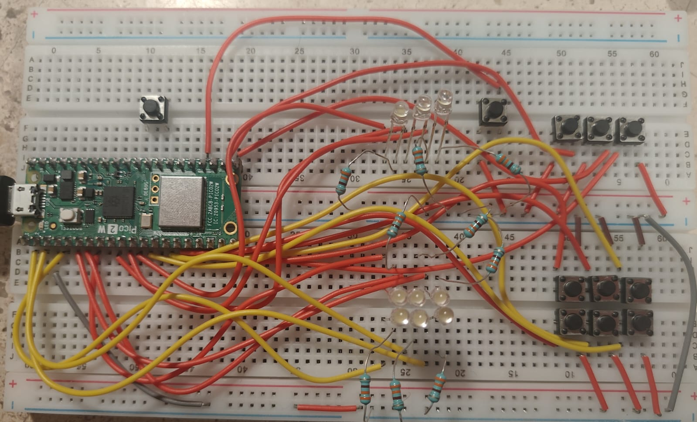
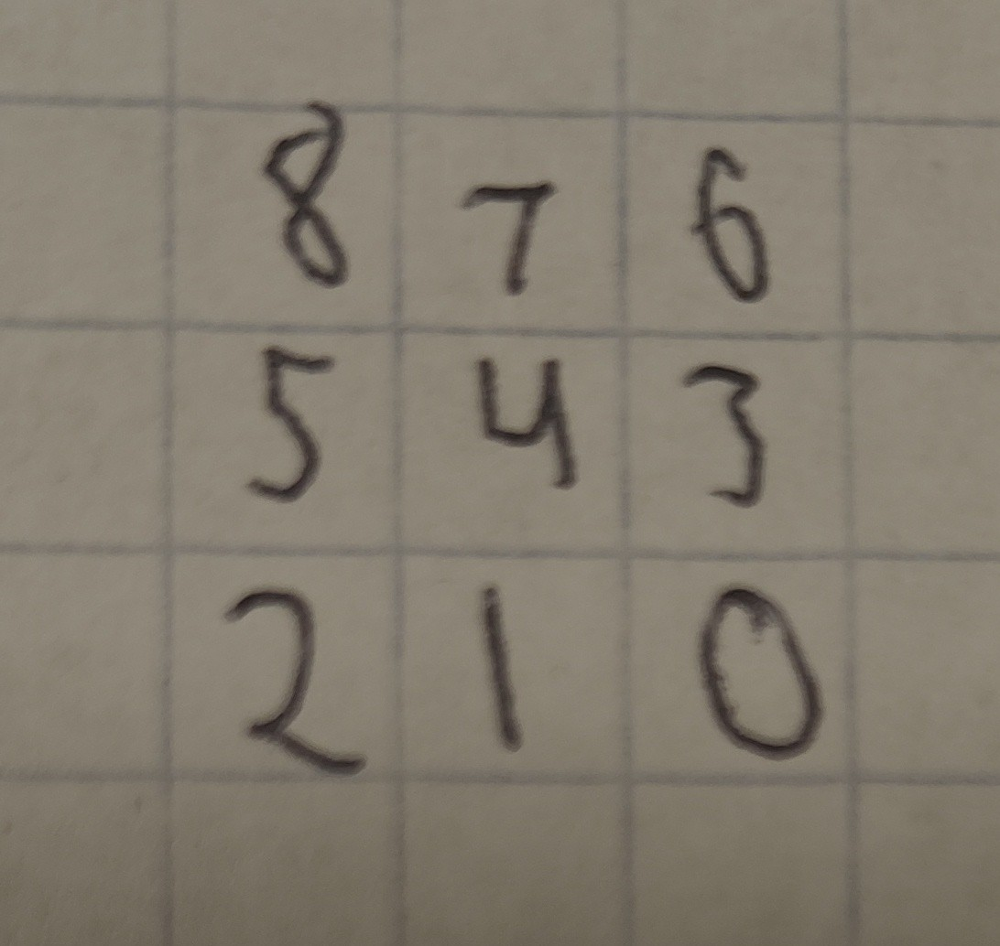

Blackout 3×3
Exam 1 — GPIO, boolean bit-packing and a hardware interrupt on a 3×3 grid
Goal (one sentence): Build a complete "lights-out" puzzle on a 3×3 grid of LEDs and buttons on the Pico 2 W — every GPIO explicitly configured, the whole board packed into one bit-packed integer touched only with bitwise operators, a hand-written RNG seeded from the hardware ring oscillator, and a restart button served by a hardware interrupt that works from any game state, including mid-victory.
Setup
| Signal | GPIO | Direction | Pull | Notes |
|---|---|---|---|---|
LED bits 0–8 (LED_BASE = 0) |
GP0–GP8 | output | none — gpio_disable_pulls() |
1 GPIO per LED. Position = bit index, row-major: bit 8 = top-left … bit 0 = bottom-right, as seen from the front in the setup image. |
Grid button bits 0–8 (BTN_BASE = 9) |
GP9–GP17 | input | pull-up — gpio_pull_up() |
Same position mapping as the LEDs. Pull-up means a press reads 0 |
Restart button (RESTART_BTN) |
GP18 | input | pull-up | Not part of the 3×3 grid. Served by a falling-edge hardware interrupt, not polled (R5) |
19 GPIOs total, all initialized together with gpio_init_mask(led_mask | btn_mask) and then split into outputs/inputs with sio_hw->gpio_oe_set / gpio_oe_clr — every line gets an explicit direction and pull in setup_hardware(), nothing is left at the reset default (R1). Each LED has a current-limiting resistor in series, sized for 3.3 V logic.

Pico 2 W with the 3×3 LED grid, the 3×3 button grid, and the separate restart button.Non-default: the only external library linked besides pico_stdlib is hardware_rosc, added on purpose so the code can read rosc_hw->randombit directly:
R6 bans a library RNG, so the board seed can't come from anything like rand(). Instead, setup_hardware() samples the ring oscillator's randombit 32 times (one delay_cycles(100) apart) to build a 32-bit seed, then feeds that into a hand-written xorshift32 for every board draw afterwards — the ROSC is only ever used once, to seed the shift register, not on every random number.

Quick reference I sketched to check physical position against bit index while wiringWhat I did
- Wired 9 LEDs (GP0–GP8, current-limiting resistors) and 9 grid buttons + 1 restart button (GP9–GP18, internal pull-ups) on the breadboard.
- Packed the 3×3 board into one
volatile uint32_t board_state, and hand-derived the 9 plus-shapedTOGGLE_MASKS[](one XOR mask per button, clipped at the edges). - Wrote
custom_xorshift32()and seeded it bit-by-bit fromrosc_hw->randombit;generate_new_board()applies 15 random masks and rejects boards that come out already-solved or solvable in one move. - Registered a falling-edge interrupt on the restart button (
gpio_set_irq_enabled_with_callback) that regenerates the board and clearsvictory_statefromrestart_isr(). - Polled the 9 grid buttons each loop with a one-shot flag per button plus a fixed-cycle debounce (
delay_cycles(300000)), and declared victory as soon asboard_state == 0, blinking all 9 LEDs withgpio_toglwhile ignoring grid input.
Demo — full game running
Random board on power-up, a few moves showing the plus-shaped toggle (center, edge and corner), a mid-game restart via the interrupt button, and the win animation.
G1 — Control the display
Each LED is an independent output on GP0–GP8; update_display() clears the whole 9-bit mask with sio_hw->gpio_clr and re-sets it from board_state << LED_BASE in one write. Physical position matches the bit order in the sketch above — that mapping is what makes TOGGLE_MASKS[] correct in the first place.
G2 — Read the nine buttons reliably
Each button is read straight off sio_hw->gpio_in, masked to its own bit — pull-up means "pressed" is a 0:
A btn_flags[9] array (one flag per button, not board state — R2 only applies to the board itself) makes each press register exactly once: the flag goes up after a debounce confirms the press, and only comes back down after a second debounce confirms release, so holding a button doesn't repeat the move and two buttons held at once don't interfere with each other.
G3 — The plus-shaped toggle
This is where the wiring mistake below showed up first. TOGGLE_MASKS[i] is precomputed per position instead of chasing neighbors at runtime:
const uint32_t TOGGLE_MASKS[9] = {
0x00B, 0x017, 0x026,
0x059, 0x0BA, 0x134,
0x0C8, 0x1D0, 0x1A0,
};
// applying a move is one line:
board_state ^= TOGGLE_MASKS[i];
Corners flip 3 bits, edges flip 4, the center flips 5 — the mask itself is what clips the pattern at the border, so there's no boundary if anywhere in the move logic (R3).
G4 — Random starting board
generate_new_board() XORs 15 random masks onto an empty board, then checks the result isn't 0 and isn't equal to any single TOGGLE_MASKS[i] (a one-move win) before accepting it — every generated board is reachable from empty in at most 15 moves, which also proves it's always solvable in reverse. Two consecutive restarts land on different boards because each restart re-draws from custom_xorshift32(), which never resets — only the initial seed came from the ROSC.
G5 — Restart by interrupt
void restart_isr(uint gpio, uint32_t events) {
if ((gpio == RESTART_BTN) && (events & GPIO_IRQ_EDGE_FALL)) {
generate_new_board();
update_display();
victory_state = false;
}
gpio_acknowledge_irq(gpio, events);
}
Registered once in setup_hardware() with gpio_set_irq_enabled_with_callback(RESTART_BTN, GPIO_IRQ_EDGE_FALL, true, &restart_isr). Because it writes board_state and victory_state directly instead of setting a flag for the main loop to notice later, a restart takes effect immediately no matter what the main loop was doing — including mid-victory-blink (G6/R8).
G6 — Victory condition
board_state == 0 is checked once per main-loop pass, right after the button-handling block, so victory is flagged the same loop iteration the last LED goes out — no extra press needed. Once victory_state is true, the loop's top if skips the whole button-reading block and just toggles all 9 LEDs with sio_hw->gpio_togl, so grid presses can't change the board anymore and the blink can't be mistaken for a normal board.
What went wrong
On the first wiring pass, the LED legs went into the wrong GPIO columns relative to the bit-position sketch above — physically closer to a mirrored layout than the row-major, top-left-is-bit-8 order the code assumes.
Open question
update_display()clears and re-sets the full 9-bit LED mask on every button press, even though only 3–5 bits actually change. The victory blink already usessio_hw->gpio_toglon the full mask — could a press instead dosio_hw->gpio_togl = TOGGLE_MASKS[i] << LED_BASEand skip touching the bits that don't change?